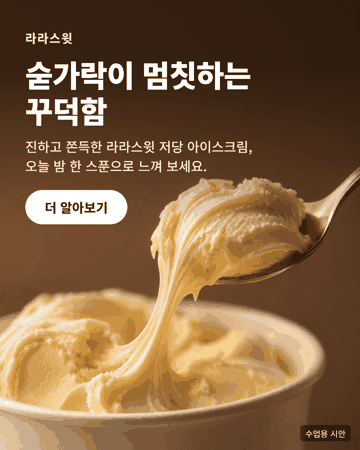
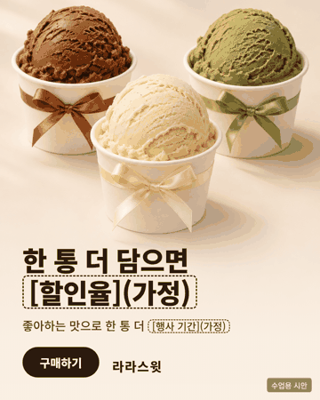

라
라라스윗광고 · 시안 A
숟가락이 쭉 늘어나는 꾸덕함, 오늘 밤 한 스푼 어때요?

인스타그램 피드 4:5 이미지 · 새 눈 심사 결과 통과 3, 보류 0 · 자세한 기록은 review_1125.md
숟가락이 쭉 늘어나는 꾸덕함, 오늘 밤 한 스푼 어때요?

퇴근하고 불 하나만 켠 책상, 나를 위한 한 스푼.
좋아하는 맛으로 한 통 더 담아 두세요 [할인율](가정)

근거 숫자: patterns_1125.md (공통광고_디저트.csv 35줄 → 28줄, 판단 보류 2줄, 게재 일수 위 20%를 오래 돈 묶음으로). 할인율·행사 기간은 사람이 확인해서 넣어요.